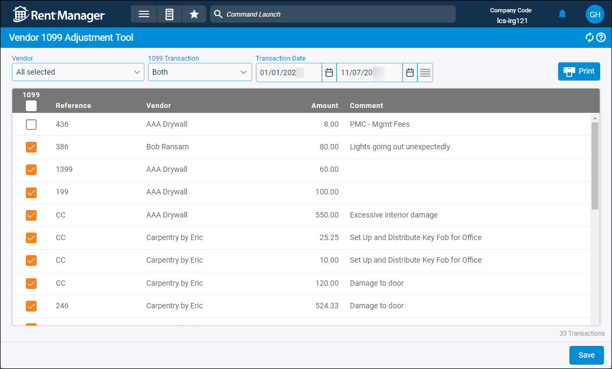

Source: https://rmxhelp.rentmanager.com/Topics/Express/Other/Vendor-1099-Adjustment-Tool.htm
Vendor 1099 Adjustment Tool
With the Vendor 1099 Adjustment Tool, Rent Manager makes it easy to update the tax status on checks that were written during a specified date range. You can use the 1099 adjustment tool to verify that all checks for your 1099 vendors are marked correctly for tax reporting purposes. At the end of the tax year, all vendor checks with the 1099 option enabled are included in Vendor 1099 report totals.
Related Privileges
| Group | Privilege | Column |
|---|---|---|
| Payables | Use 1099 adjustment tool | Enabled |
| Banks/Checks | Checks | View, Edit |
For more information, refer to Control User Access.
To use the 1099 vendor adjustment tool, go to  arrow_forward Accounting arrow_forward
arrow_forward Accounting arrow_forward  Accounting Setup arrow_forward General arrow_forward Vendor 1099 Adjustment Tool.
Accounting Setup arrow_forward General arrow_forward Vendor 1099 Adjustment Tool.

Step 1: Adjust 1099 Status
To adjust the 1099 status on existing checks, do the following:
-
Select the Vendors whose checks populate in the adjustment tool. Only vendors who, on the vendor's details page, have the Tax Information option 1099 Vendor display.
To include non-1099 vendors, check Non-1099 Vendors in the Vendor drop-down field. When the 1099 column is enabled for a non-1099 vendor, a pop-up with the option to change the status of the vendor to a 1099 Vendor displays. -
Select from one of the following 1099 Transaction options to determine which checks display in the adjustment tool:
Option Description True
These checks already have the Is 1099 column enabled for each line item.
False
These checks do not have the Is 1099 column enabled for each line item.
Both
Checks that do and checks that do not have the Is 1099 column enabled for each line item.
-
Select a Transaction Date range. Checks that were written during the selected date range populate on the page. By default, the current year to date is entered.
-
On the list of vendor checks, enable Is 1099 for each check that should be marked as 1099 for tax reporting purposes.
-
If applicable, uncheck Is 1099 for each vendor check that should not be marked as 1099 for tax reporting purposes.
-
Click Save.
All line items on each affected check are updated to reflect the new 1099 status. To view the updated check, click on the reference item in the Reference column.
Step 2: Print the Adjustments
To generate this page as a printer-friendly report, click  Print.
Print.
Each report offers tools for managing the report such as printing, exporting, changing the view size, and more. The tools available are dependent on the report.